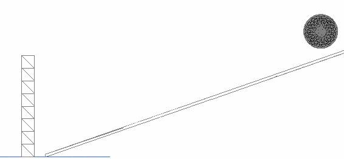

Creating a basic PhysX level in the World Editor
From C4 Engine Wiki
In this tutorial we will create a basic map that contains a stack of boxes that are then smashed by a heavy marble.
If you are new or unsure about map creation in C4 I recommend you read through this overview first
You will need:
- JamesH’s PhysX Integration
- Latest Ageia PhysX Drivers
- C4 build 143 or higher (also you can use the demo)

This is a simple diagram of the final level.
- After starting up C4 press Escape, ~ (`) and then Ctrl-O. Navigate through to Data/PhysX/world and load PhysX-Base.wld
- Click “Page” located on the top toolbar, then click “Transform”. Transform is handy for scaling an object by entering a number in the fields.
- For organisational purposes right click on the bottom right viewport and select “Front” to change the viewport mode to face frontwards.
- Located on the left is a Geometry pane. Click the cube shape.
- Drag out the box through the front viewport.
- Because the barriers are going to be in our way when designing the level switch to selection mouse mode (Hotkey - 0) and select the top area of the box, make sure you do not select the cube we have just created.
- To hide the selection press Ctrl-H
- Select the cube just created (Selection Mode Hotkey – Press 1) In the Transform view change all the fields to the following:
- Now that there is a ramp we need to add is some physics driven boxes to be smashed by a marble. With the cube drawing tool used earlier to place a cube. For the purpose of this tutorial we will make use of the “major lines” to help us to create a wall of cubes.
- Draw the cube through any view port, press 4 to switch to the “Scale Codes” tool. Scale the box to fit in between the major lines to form a perfect cube.
- With the cube selected press Ctrl-I. Click the “Properties” tab, and change the following fields
- Click the “Controller” tab, and choose “PhysX Rigid Body” in the controller type.

- Press Ctrl-D to duplicate the box. To move the box in between the next major line tile press 2. Make sure that the box has been positioned correct in each viewport. Continue duplicating the cube to you finish with three perfectly aligned cubes.
- Switch to selection mode (Hotkey – 0). Select the three boxes, duplicating and positioning (remember to use the “Move Nodes” function, hotkey - 2.
- You will find there is only one missing spot, simple select a single box (press 1) and duplicate it to fill the empty box.
- Select the row from the front viewport (in this case the bottom left). Duplicate and place it above the row.
- Continue doing this until you make roughly 8 rows though this is not very important.
- In the geometries pane there is a ball shape, draw the ball anywhere and change the transforming fields to the following:
- With the cube selected press Ctrl-I. Click the “Properties” tab, and change the following fields. Make sure you adjust the Mass to 500.
- Click the “Controller” tab, and choose “PhysX Rigid Body” in the controller type.
Now save the world and play. Alternatively you can simply press Ctrl-P.
If you want to go a step further and change the textures of each object read this overview.